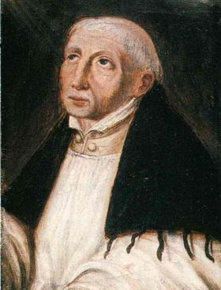

Sacred Texts Christianity
Buy this Book at Amazon.com
|  | The Adornment of the Spiritual Marriageby Jan van Ruysbroecktr. by C. A. Wynschenk Domed. by Evelyn Underhill[1916] |
Jan van Ruysbroeck [b. 1293 or 1294, d. 1381] was a Flemish mystic. He led a life of asuterity, eventually founding a congregation in Groenendaal. His writings were widely circulated in his lifetime and he influenced an entire generation of Christian mystics. He was beatified on Decmber 1st, 1908, by Pope St. Pius X.